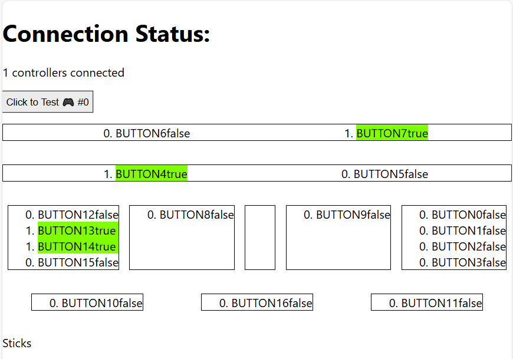
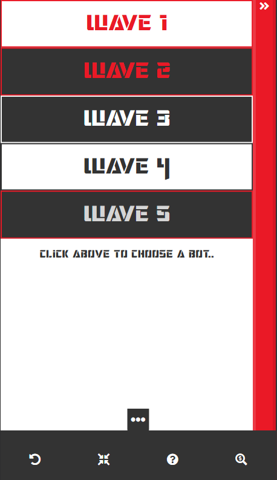

Projects

Built using: Unity, C#, Nomad Sculpt, ProCreate
 A fun weekend project co-developed with my brother for Ludem Dare Game Jam 50 -- with a theme of
"Inevitable".
A fun weekend project co-developed with my brother for Ludem Dare Game Jam 50 -- with a theme of
"Inevitable".
This was invigorating working with a theme, and getting to come up with an idea in a very short time frame. It also forced me to not succumb to scope creep
isometric platformer demo
Built using: Godot, GDScript, C++, Nomad Sculpt, ProCreate, Aseprite
My first step into Godot and C++ after reading Stephen Seth Ulibarri's book on C++. Styled after Super Mario RPG from Squaresoft
This was a fun one, as I implemented my own gravity, collision, and fun little tricks like transparency and shadows as the character jumps and moves behind blocks! Also this was when Crabboy was born :-)
Built using: React, Typescript, Webpack
 I wanted to develop a Gamepad tester that I could use without worrying about some nefarious site dropping cookies and localStorage data on my machine! So I made a Gamepad testing application using the Gamepad API!
Simply plug in a USB controller (Xbox, Playstation, etc.), press a button, and you can start testing
It also supports testing multiple controllers at once!
Built using: Unity, C#, Nomad Sculpt, ProCreate, Aseprite
 A love-letter to Bandai Namco's DigiMon and Tamagotchi virtual pets, but taking the formula to a
different
place. Co-developed with my brother Dave Vader and a small team of University of Michigan CS students.
A love-letter to Bandai Namco's DigiMon and Tamagotchi virtual pets, but taking the formula to a
different
place. Co-developed with my brother Dave Vader and a small team of University of Michigan CS students.
I was responsible for game design, art, sound, story, as well as community management, and crowd funding
Built using: HTML, CSS, JavaScript, JSON
After being baffled by the amount of items on screen while paying a bill online, I conceived this a way to combine all third-party widgets, such as chat, help, feedback, along with any other floating UI elements a website may have, such as a "scroll top" or shopping cart button.
The client can customize a JSON configuration file to control every aspect of the shelf element, like the amount of segments contained within it. The client would also add in the necessary callback functions to launch each respective widget.
This gives the user the ability to have a less inhibited browsing experience. This is further enabled by enabling the shelf to be draggable to different parts of the viewport.
Built using: HTML, CSS, JavaScript, AngularJS, node.js, Express, and PostgreSQL DB
 This was a personal project that I built as a skills test during my bootcamp experience, and I tied it into my nerdy obsession at the time, playing a trading card game!
The utility is used as replacement for pen + paper, tokens, or other means of tracking damage dealt through the course of a game of Transformers: The Trading Card Game. It also provides solutions to advanced game mechanics, such as combining cards into one "super-bot" that changes the health value, and the character that is in the playfield.
Users are also able to get up-to-date pricing on their collection by using the pricing tool, which is powered by the TCG Player REST API.
About Me
What truly fuels me is an unwavering passion for doing impactful work, especially when aligned with areas I care deeply about. My lifelong immersion in video games isn't just a hobby; it's a profound influence that taught me the power of engagement, problem-solving, and the joy of shared experiences.
This passion led me to pursue and immerse myself in programming and leadership. Currently, I lead a team of
JavaScript developers, building bespoke digital analytics solutions for major corporations. My journey, from
fostering connections while working in retail at GameStop, to independently developing games, has underscored
the importance of pursuing passions and building strong relationships, which have put me on the path to
achieving both personal and professional success. I'm always looking for an opportunity to contribute my
dedicated work ethic and leadership skills to a company in a vertical where my passion can truly shine, making
a tangible difference for both the business and its people.